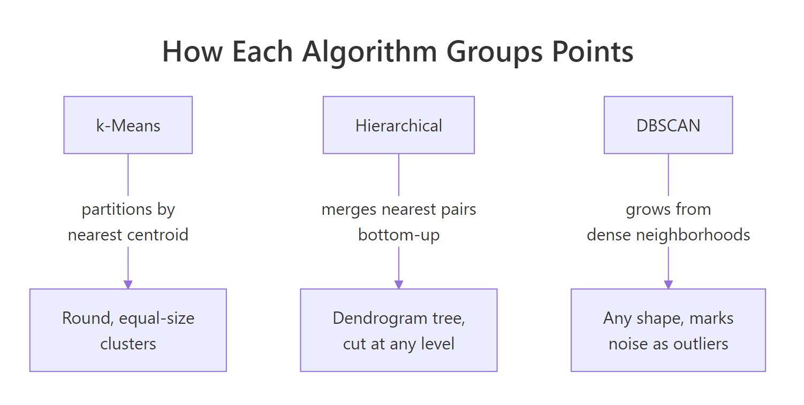
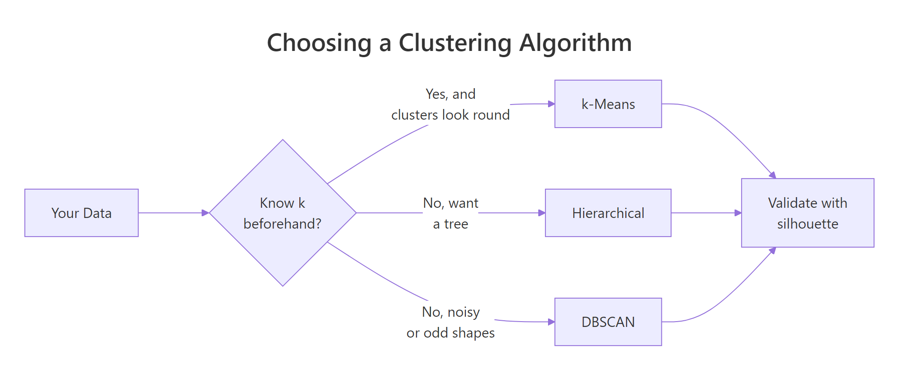
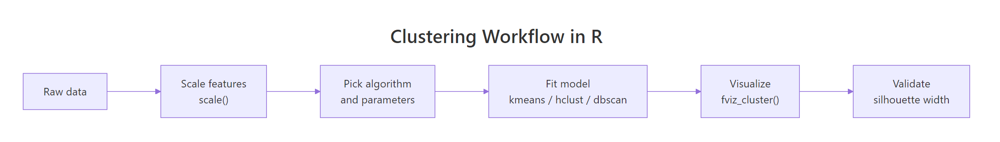

Clustering in R: k-Means vs Hierarchical vs DBSCAN, How to Choose for Your Data
Clustering groups similar rows of data when no labels exist, and the three main algorithms in R, kmeans(), hclust(), and dbscan(), each suit different cluster shapes, sizes, and noise levels. This tutorial fits all three to the same dataset so you can see exactly where each one shines and fails.
What happens when you run all three clustering algorithms on the same data?
If you have numeric data and no labels, you start by picking an algorithm. The fastest way to see what each one does is to fit all three to the same data and look at the cluster plots side by side. We use the multishapes demo data from factoextra, because its groups are deliberately non-spherical, which is the scenario where the three algorithms disagree most.
Three algorithms, three different answers on the same 1100 points. k-Means and hierarchical were told to find 5 clusters. DBSCAN found 5 real clusters plus a noise label (cluster 0), bringing its count to 6 labels. Let's visualize each fit so the difference becomes obvious.
k-Means slices the two intertwined crescent moons right down the middle, which is wrong. Hierarchical with Ward's linkage does the same. DBSCAN, because it follows density rather than distance to a centroid, traces the moons correctly and flags the scattered points as noise. The picture tells you everything: algorithm choice is driven by cluster shape, not by preference.
Try it: Refit k-means on shapes but with centers = 2, then print table(km_fit2$cluster) to see the new cluster sizes.
Click to reveal solution
Explanation: With k=2, k-means collapses the five true groups into two large partitions based purely on centroid proximity. The numbers always sum to nrow(shapes) because every point gets assigned.
How does k-Means partition data around centroids?
k-Means works by repeatedly doing two things: it picks k cluster centers, assigns each point to its nearest center, then moves each center to the average of its assigned points. That loop runs until nothing moves. The output is a partition where every point belongs to exactly one cluster.
Two practical rules before you call kmeans():
- Scale your features first. k-Means uses Euclidean distance, so a column measured in thousands dominates a column measured in decimals.
- Use
nstart >= 25. The algorithm is sensitive to its random starting centers. Running it 25 times and keeping the best result gives stable clusters.

Figure 1: How each algorithm groups points differently.
The between_SS / total_SS ratio, 88.7%, tells you how much of the total spread is explained by the cluster structure. Higher is tighter. This metric is useful when comparing two k-means fits with different k values on the same data.
The centers are in scaled units, so a value of 1.68 means "1.68 standard deviations above the mean on x". If you need centers in the original units, multiply back by the original column's standard deviation and add its mean, or call kmeans() on the raw (unscaled) data if columns share units.
nstart = 25 or higher. The default of 1 gives the first random init, which can land in a poor local minimum. 25 takes milliseconds extra and gives you the best of 25 restarts.Try it: Refit k-means on shapes_sc with centers = 3 and save as ex_km. Print ex_km$size to see the three new cluster sizes.
Click to reveal solution
Explanation: Going from k=5 to k=3 merges neighboring clusters. The total is still 1100 points because every point is partitioned.
How do you pick the right k with the elbow and silhouette?
For k-means and hierarchical, you pick k yourself. Two methods dominate in practice:
- Elbow method (within-cluster sum of squares, WSS): plot WSS against k. The "elbow" is where adding another cluster stops buying you much compactness.
- Silhouette width: plot the average silhouette against k. Pick the k that peaks. Silhouette measures how well each point sits inside its cluster versus the next nearest one.
fviz_nbclust() from factoextra runs the search and draws the plot in one call.
Look for the point where the curve bends. On multishapes the bend sits around k=5 or k=6, which matches the five real shapes plus their overlaps.
Silhouette peaks where the within-cluster points are tight and the between-cluster separation is wide. A peak score above 0.5 is usually solid; below 0.25 means the clusters are not well separated and you should question whether clustering is the right tool.
Try it: Run fviz_nbclust() with method = "gap_stat" and save the plot as ex_gap. The gap statistic is a third optimizer that compares WSS against a null reference distribution.
Click to reveal solution
Explanation: The gap statistic runs 50 bootstrap resamples (nboot = 50) of uniformly distributed null data and compares the WSS gap. It's slower than the other two methods but often more robust on noisy data.
How does hierarchical clustering build a dendrogram?
Hierarchical clustering builds a tree, not a flat partition. It starts with every point as its own cluster, then repeatedly merges the two closest clusters until one cluster holds everything. The "closest" definition is called the linkage method, and it matters a lot.
The three linkages you'll meet in the wild:
- Ward's (
"ward.D2"), merges clusters that increase within-cluster variance the least. Tends to produce compact, round clusters. The default for most analyses. - Complete, merges based on the most distant pair of points between clusters. Produces tight, evenly sized clusters.
- Single, merges based on the closest pair. Can produce long "chained" clusters that snake through the data.
Once the tree is built, you cut it at a chosen level with cutree() to get a flat cluster assignment.
You get the tree once and can cut it at any k without refitting. That's one advantage over k-means, which must refit per k.
Height on the y-axis is the linkage distance at which two clusters merge. The longer the vertical line between a merge and the next one below, the more distinct the clusters being joined. rect.hclust() draws boxes around the five groups that emerge at k=5.
Try it: Refit hierarchical clustering with method = "single" and cut at k=5. Save the cluster vector as ex_hc_single and compare its sizes with Ward's.
Click to reveal solution
Explanation: Single linkage put 1096 points into cluster 1 and made each of the other clusters a single point. This is the chaining effect: single linkage is happy to merge clusters via a single bridge point, collapsing everything into one giant group.
How does DBSCAN find clusters of arbitrary shape?
DBSCAN stands for Density-Based Spatial Clustering of Applications with Noise. Instead of a fixed k, it takes two parameters:
eps, the radius defining a point's neighborhood.MinPts, the minimum number of neighbors withinepsto call a point "core".
The algorithm then grows clusters by chaining together core points whose neighborhoods overlap. Points that don't fit into any cluster get label 0, meaning noise. This is why DBSCAN can handle concentric rings, crescents, and other shapes where every other algorithm fails, and it never forces outliers into a cluster they don't belong to.
The hard part is picking eps. A standard trick: plot the distance to each point's k-th nearest neighbor in ascending order. The "knee" in the curve, where the line bends sharply upward, is a good eps.
The dashed red line at eps = 0.15 sits right at the elbow of the curve, meaning most points have their 5th neighbor within 0.15 units and only the noise points reach beyond it. That's the sweet spot.
Cluster 0 contains the 31 noise points. The five real clusters (1 through 5) correspond to the five shapes in the dataset. Compare this to k-means, which forced those 31 outliers into cluster memberships they don't really belong to.
Try it: Refit DBSCAN on shapes_sc with eps = 0.5 (much larger). Save as ex_db and check table(ex_db$cluster). You'll see clusters merge.
Click to reveal solution
Explanation: A too-large eps makes every point a neighbor of every other, so DBSCAN collapses everything into one giant cluster with almost no noise. This is why the kNN plot matters: it tells you the scale of "neighborhood" your data actually supports.
Which algorithm should you pick for your data?
After seeing all three in action, you now have the information you need to choose. The decision hinges on three questions: do you know k, are the clusters round, and do you need to handle outliers?

Figure 2: A quick decision path for picking a clustering algorithm.
A compact guide:
| Situation | Best pick | Why |
|---|---|---|
| You know k, clusters look round | k-Means | Fastest, simplest, scales to millions of rows |
| You want a tree to inspect | Hierarchical | Dendrogram reveals structure at every level |
| Shapes are irregular or you expect outliers | DBSCAN | Density-based, flags noise as cluster 0 |
| Data has tens of millions of rows | k-Means | Others are O(n^2) in memory |
| You're exploring and don't know k | Hierarchical + silhouette | Tree + quantitative cut |
For any clustering decision, the single most useful validation number is the average silhouette width. It ranges from -1 to 1: values above 0.5 are strong structure, 0.25 to 0.5 is weak but real, below 0.25 means the clustering may not be meaningful. Computing it on all three fits gives you an objective tiebreaker.
DBSCAN wins with 0.613 because it ignored the noise points and only scored the density-coherent groups, exactly as it should. k-means and hierarchical paid the penalty for forcing outliers into the nearest cluster, which dragged their average silhouette down. When the shapes are irregular, DBSCAN dominates this benchmark; when they are round, k-means usually leads.
Try it: Compute the silhouette width for ex_km (your k=3 k-means fit) using d_sc and compare it to sil_km above.
Click to reveal solution
Explanation: k=3 on non-spherical shapes gives a lower silhouette (0.382) than k=5 (0.418), confirming that fewer clusters forced heterogeneous points together.
Practice Exercises
Exercise 1: k-Means on iris, does it match species?
Scale iris[, 1:4], run k-means with k = 3 and nstart = 25, then cross-tabulate the cluster against iris$Species. Save the cluster vector as my_km and the table as my_tbl.
Click to reveal solution
Explanation: Cluster 1 is a perfect match for setosa. Clusters 2 and 3 mostly align with versicolor and virginica, with 25 misassignments where the two species overlap in petal space. Clustering is not a classifier, so this kind of partial alignment is normal.
Exercise 2: Hierarchical clustering of USArrests
Scale USArrests, run Ward's hierarchical clustering, cut at k = 4, and save the state-to-cluster mapping as my_states. Which cluster contains California?
Click to reveal solution
Explanation: California sits with 10 other high-crime, high-urbanization states. Ward's linkage groups states that are close in the combined space of murder, assault, rape, and urban population.
Exercise 3: k-Means vs DBSCAN on concentric rings
Generate two concentric rings with base R (inner ring radius 1, outer ring radius 3, both with small Gaussian noise). Save the 2-column matrix as my_rings. Fit kmeans(my_rings, 2) and dbscan(my_rings, eps = 0.3, MinPts = 5). Plot both colorings.
Click to reveal solution
Explanation: k-Means cuts the rings in half because it can only draw straight boundaries between centroids. DBSCAN traces each ring cleanly because it follows density. This is the classic illustration of why algorithm choice matters more than tuning.
Complete Example: End-to-End on iris
Here is the full workflow from raw data to algorithm choice, applied to iris.
DBSCAN wins on iris as well, but notice why: it discarded 17 noise points (the overlap zone between versicolor and virginica) and only scored the well-separated core. k-means and hierarchical had to classify those overlap points, which is harder. The lesson: the silhouette winner depends on whether you need every point assigned. If you do, k-means at 0.460 is your answer. If you don't, DBSCAN's 0.605 reflects tighter structure.

Figure 3: The end-to-end clustering workflow in R.
Summary
| Algorithm | Function | Strength | Weakness | Best for |
|---|---|---|---|---|
| k-Means | kmeans() |
Fast, scalable, simple | Assumes round clusters; needs k upfront | Large tabular data with roughly equal, compact groups |
| Hierarchical | hclust() + cutree() |
Full tree at every k; interpretable | O(n²) memory; sensitive to linkage | Small-to-medium data where structure matters |
| DBSCAN | dbscan::dbscan() |
Any shape; labels noise | Parameters eps/MinPts are finicky | Spatial data, anomaly detection, non-spherical clusters |
Three recurring mistakes to avoid:
- Clustering without scaling. Any algorithm using Euclidean distance is dominated by the column with the largest variance. Always
scale()first unless columns share units. - Picking k without validation.
fviz_nbclust()takes one line and will tell you if your k is defensible. Use it. - Ignoring DBSCAN because "it's for spatial data". DBSCAN works on any numeric matrix with meaningful distances. It's especially valuable when outliers matter.
References
- Hastie, T., Tibshirani, R., & Friedman, J., The Elements of Statistical Learning, 2nd ed. (Springer, 2009), Chapter 14 on unsupervised learning. Link
factoextrapackage reference manual. Linkdbscanpackage on CRAN, Hahsler, M., Piekenbrock, M., Doran, D. Journal of Statistical Software 91(1), 2019. Link- Ester, M., Kriegel, H.-P., Sander, J., & Xu, X., A density-based algorithm for discovering clusters in large spatial databases with noise. KDD-96 Proceedings. Link
- Ward, J. H., Hierarchical grouping to optimize an objective function. Journal of the American Statistical Association 58:236-244, 1963.
- Rousseeuw, P. J., Silhouettes: a graphical aid to the interpretation and validation of cluster analysis. Journal of Computational and Applied Mathematics 20:53-65, 1987.
- UC Business Analytics R Programming Guide, K-means and hierarchical clustering articles. Link
- STHDA, DBSCAN for discovering clusters in data with noise. Link
Continue Learning
- PCA in R, Reduce dimensions before clustering when your features are correlated.
- Multivariate Distances, Understand the distance metrics that sit under every clustering algorithm.
- Outlier Detection in R, DBSCAN's noise label is one approach; see the full toolkit for spotting anomalies.